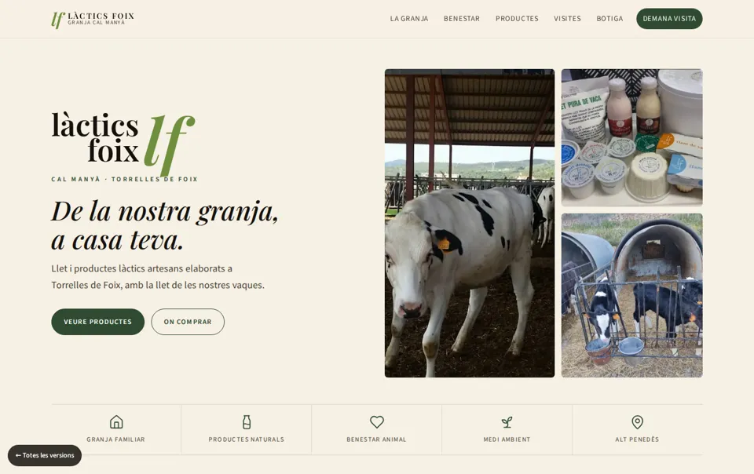
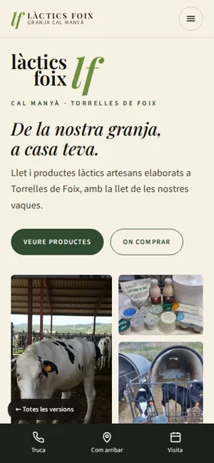

Proposta 01
Clàssica refinada
L'evolució natural de la web actual: manté la identitat (crema, verd bosc, serif elegant i el logotip «lf») però ordena, alleugereix i fa tot més fàcil d'usar.
Millores principals
- Portada a dues columnes amb mosaic de fotos (substitueix la foto de capçalera) i botons d'acció clars.
- Menú fix més curt (6 entrades) amb la secció activa ressaltada en fer scroll.
- Història convertida en línia de temps (1986 → renovació → premi 2011 → avui).
- Barra inferior en mòbil: Truca · Com arribar · Visita.
- Galeria amb visor accessible: fletxes, teclat, Esc i comptador.
- Mapa de Google carregat només sota demanda i targetes de contacte clicables.
Ideal si estas content amb l'estètica actual i vols un salt de qualitat sense canviar d'imatge.